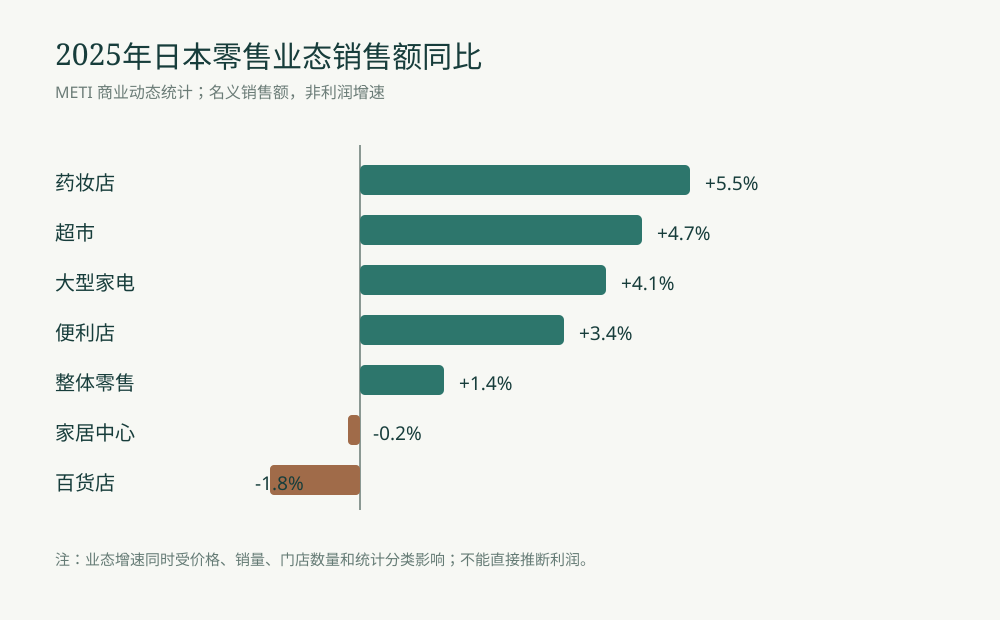

01｜执行摘要：逆势增长不是行业神话
日本案例确实显示，收入预期转弱、价格竞争加剧和零售制度变化时，折扣零售、便利店、药妆和食品零售等业态可以获得份额。但这不意味着某些消费品在整个失落三十年里都按固定比例暴涨，更不意味着销售额增长等于利润增长。
- 1990年代折扣零售有直接数据支持：OECD记录折扣店销售额年均名义增长约10%；非食品折扣店份额从1988年的4.2%升至1993年的5.6%。[S1]
- 衰退不是唯一原因：法规放松、门店规模、批发层级和供应链效率共同改变零售竞争。[S1]
- 日本长期停滞不是静止阶段：1990年代、2010年代和2020年代的宏观机制并不相同。[S2]
- 2025年零售业态分化：药妆店+5.5%、超市+4.7%、便利店+3.4%，百货店-1.8%。[S3]
- 名义增长不等于真实销量增长：食品零售的价格因素上升、数量因素走弱；药妆店则由价格和数量共同推动。[S3]
更准确的命题是：收入预期、人口结构、相对价格和渠道效率改变时，消费者会在品类、品牌、规格、渠道和购买时点之间重新分配支出。
02｜研究范围与口径
本文将1990年代初期的零售变化、1990年代至2010年代的消费行为研究、2025年当前业态数据分开讨论。三组资料的调查范围、名义/实际价格、业态分类和样本方法不同，不能拼成一条未经调整的长期增长曲线。
- 销售额不等于销量；名义增速不等于实际增速。
- 行业销售额不等于单店销售额，更不等于利润和现金流。
- 行业扩张不等于所有企业都盈利；份额增加也可能发生在整体市场萎缩时。
03｜1990年代日本：折扣零售崛起的直接证据
| 指标 | 观察结果 | 解释边界 |
|---|---|---|
| 折扣店销售额 | 1992年后年均名义增长约10% | 不是实际销量或利润增速 |
| 非食品折扣店份额 | 1988年4.2%，1993年5.6% | 份额提升不代表无限扩张 |
| 男装折扣店销售额 | 1991—1993年+28% | 特定品类和渠道 |
| 百货店男装销售额 | 1991—1993年-15% | 同一时期渠道替代 |
| 雇员超过20人的门店数 | 1991—1994年+22% | 大型零售业态扩张 |
| 平均门店面积 | 1991—1994年约+18% | 规模和渠道组织变化 |
数据来自 OECD 1995 年《日本经济调查》。[S1] 这组数据的意义不是消费者突然不买东西，而是价格比较变得重要，传统零售商的渠道组织和定价方式受到挑战。
需求侧：价格敏感度变化
收入预期转弱会让家庭重新评估大额、可延后和可替代消费。消费者可能仍购买服装、食品和日用品，但改变品牌、促销时点、购买频率、包装规格和渠道。需求转移不等于总消费不受影响：有些需求被压缩，有些被转移，有些被推迟。
供给侧：零售制度和渠道效率
OECD 同时讨论大型零售店法规放松、门店规模增长、传统分销结构和折扣渠道扩张。大型门店扩张和折扣店增长不仅是需求变化的结果，也改变了零售商之间的竞争方式。[S1] 需求转弱提高消费者价格敏感度，竞争制度和渠道效率决定哪些企业能把这种敏感度转化为份额。
04｜失落三十年不是一条直线
日本银行2024年研究指出，1990年代经济陷入停滞和温和通缩；2010年代在货币宽松等政策下恢复，但工资和价格难以持续上升的行为惯性仍然存在；2020年代疫情后经济恢复、劳动力市场趋紧和进口价格上升，使工资—价格正向循环重新显现。[S2]
因此，1995年、2005年、2015年和2025年的日本消费者环境并不相同。把1990年代折扣店案例直接当作2025年所有行业的增长规律，会产生时间错配。
05｜2025年日本零售业：谁在增长，增长来自哪里？
| 业态 | 2025年销售额同比 |
|---|---|
| 零售业整体 | +1.4% |
| 药妆店 | +5.5% |
| 超市 | +4.7% |
| 便利店 | +3.4% |
| 大型家电专门店 | +4.1% |
| 百货店 | -1.8% |
| 家居中心 | -0.2% |
2025年日本零售额为157.508万亿日元，同比增长1.4%。药妆店增长5.5%，门店数增长3.6%；其中食品销售额增长9.1%，食品约占药妆店销售额的三分之一，调剂药品也有贡献。[S3]
METI对价格与数量因素进行分解：食品零售价格因素上升而数量因素总体走弱；药妆店销售额增长则由价格和数量共同推动。[S3] 因此不能把所有名义销售额增长都解释为消费者买得更多。

06｜消费结构迁移的六种机制
- 同一品类内品牌降档：消费者仍买洗衣液、食品和日用品，但从高价品牌转向中价或自有品牌。
- 从商品转向便利：便利店、即时零售、小包装和即食食品可能受益于时间稀缺与家庭规模变化，但配送和人工成本会侵蚀利润。
- 从传统渠道转向高效率渠道：采购更直接、周转更快、商品结构更清晰的渠道更容易获得份额。
- 健康、护理和基础服务：老龄化可能增加药品、护理用品和健康服务需求，但受支付、监管和劳动力供给约束。
- 维修、二手和租赁：消费者推迟换新、延长使用寿命，形成存量资产维护需求。
- 促销常态化：同行评审研究发现，日本促销收入占总收入的比例从1990年代约20%上升至2000年代约30%，促销频率上升而折扣幅度下降。[S6]
促销销售可能只是把购买从一个时间点移到另一个时间点，并不必然创造新增需求。
07｜流传数字核验：啤酒、威士忌、酸奶和速冻食品
网络文章常引用“日本啤酒下降62%、威士忌下降64%、酸奶增长195%、速冻食品增长178%”等数字。若没有原始表格、年份、产品分类、价格口径和样本范围，无法确认这些数字是否来自同一统计体系。至少需要核对销售额还是销量、全国家庭还是特定样本、名义还是不变价、产品分类是否改变。
本文不把这些数字列为已核实事实。未取得原始统计表之前，状态为 UNVERIFIED。
08｜对中国的启示：迁移机制，不照搬名单
| 机制 | 中国可观察领域 | 必须验证 |
|---|---|---|
| 价格敏感度上升 | 折扣店、社区超市、自有品牌 | 复购率、毛利、单店坪效、租金 |
| 家庭规模变化 | 小包装、即时零售、便利食品 | 单人家庭、客单价、配送成本 |
| 健康与老龄需求 | 药店、护理用品、适老服务 | 支付能力、医保规则、人员供给 |
| 延迟换新 | 维修、二手、租赁、翻新 | 交易信任、质保、残值、获客成本 |
| 渠道效率 | 供应链直采、仓储会员店、低成本零售 | 周转率、损耗、议价权 |
| 促销常态化 | 电商、直播、品牌折扣 | 促销后毛利、退货率、客户终身价值 |
中国与日本在人口结构、城镇化阶段、房地产资产负债表、互联网平台、社会保障和供应链成本上存在差异。日本1990年代的零售竞争发生在不同制度和渠道环境下，不应机械复制。
09｜如何识别真正的逆势机会？
- 真实需求：销量、购买频次或渗透率是否上升，而非单纯涨价。
- 客户支付能力：是否有持续支付能力，而非一次性促销购买。
- 毛利与现金流：销售增长是否带来经营现金流改善。
- 竞争结构：增长是否集中在少数高效率企业，还是所有企业都陷入价格战。
- 可持续性：增长来自长期人口和生活方式变化，还是补贴、库存周期或临时回补。
一个行业可以销售额增长、利润下降、现金流恶化；也可以整体行业萎缩，但头部企业凭借效率提升获得份额。投资或创业时应研究企业竞争位置，而不是只看行业故事。
10｜结论
日本长期停滞时期确实出现了折扣零售、促销常态化和零售渠道重组，但这些变化同时受经济需求、法规改革、供应链结构、人口变化和企业效率影响。
经济下行并不会自动创造逆势行业。更准确的解释是：收入预期和相对价格改变时，消费者会在品牌、规格、渠道、购买频率和购买时点之间重新分配支出。真正能够逆势发展的企业，是那些能够用更低成本、更高周转、更可信服务或更适配的人群需求，持续满足客户新选择的企业。
参考来源
- OECD, OECD Economic Surveys: Japan 1995, 1995-01-01. 报告
- Bank of Japan, Japan's Economy and Prices over the Past 25 Years, 2024-12-13. 研究
- METI, 2025年小売業販売を振り返る, 2026-04. 统计分析
- METI, Commercial Dynamic Statistics: Long-term Time Series Data, updated 2026-06-15. 统计数据库
- Statistics Bureau of Japan, Family Income and Expenditure Survey. 统计数据库
- Journal of Money, Credit and Banking, Working Less and Bargain Hunting More, 2018. 论文